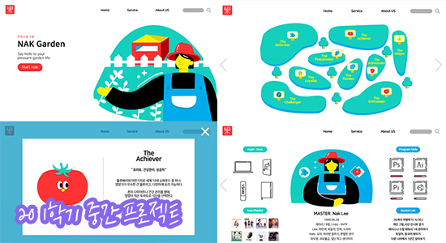
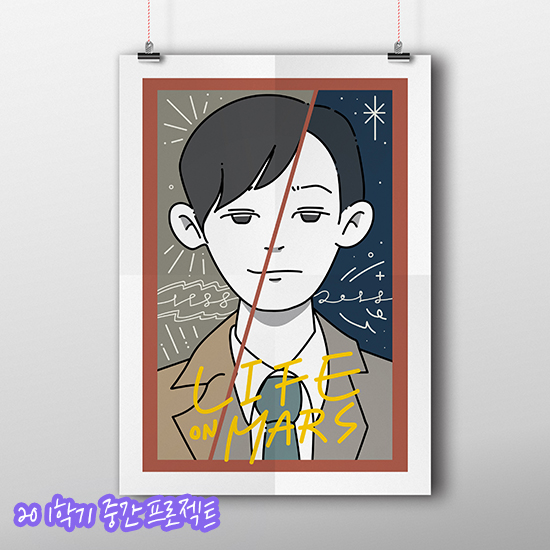

The world is her who nak it.

20 1학기 중간 프로젝트
1학년 1학기 디자인의 기초디자인 과목의 중간 프로젝트입니다. 포토샵,일러스트,xd로 작업했습니다.
제 애니어그램 유형을 도출해서 자기 소개하는 웹사이트형 인포그래픽입니다.

20 1학기 중간 프로젝트
1학년 1학기 디자인의 기초드로잉 과목의 중간 프로젝트입니다. 일러스트로 작업했습니다.
OCN 드라마 '라이프 온 마스'의 포스터 리뉴얼 작업입니다. 두가지 시안 중 메인 시안입니다.
즐거움이 담긴 디자인을 하는 디자이너,
이나경입니다.
● 레드벨벳 ‘The ReVe Festival' Day 1 2D 인포메이션
● 앨범 리뷰 페이지 제작 - 블랙핑크 'The Album'
● 과제 모음집 - 기적의 땅, 쉿 과제의 숲
insta: @nakuniv